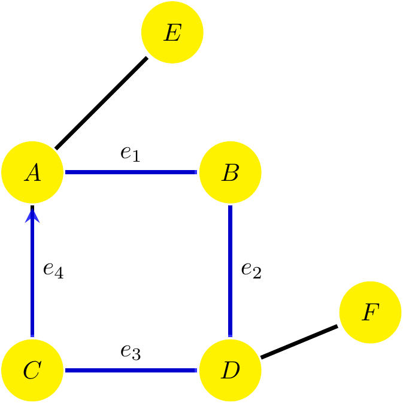
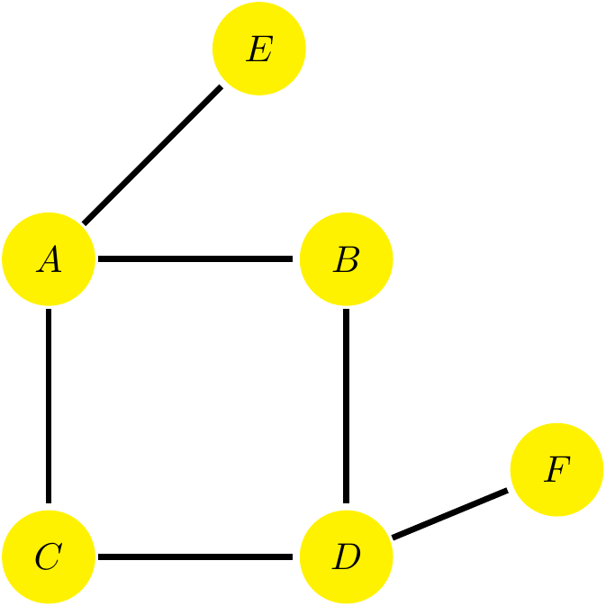
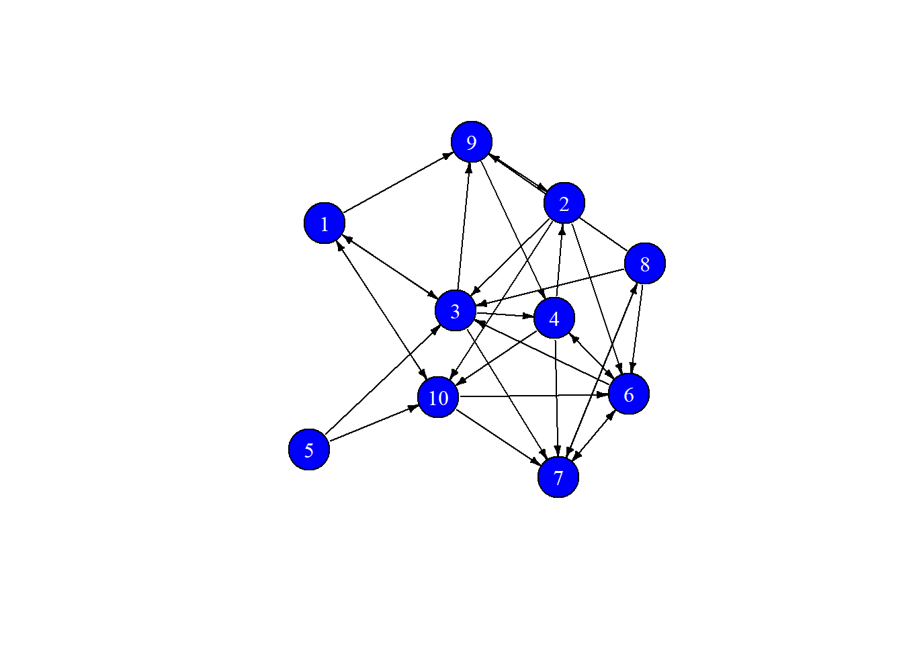
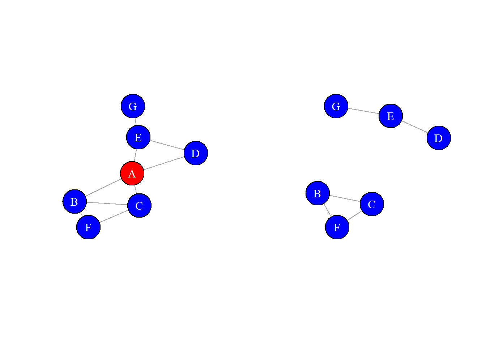
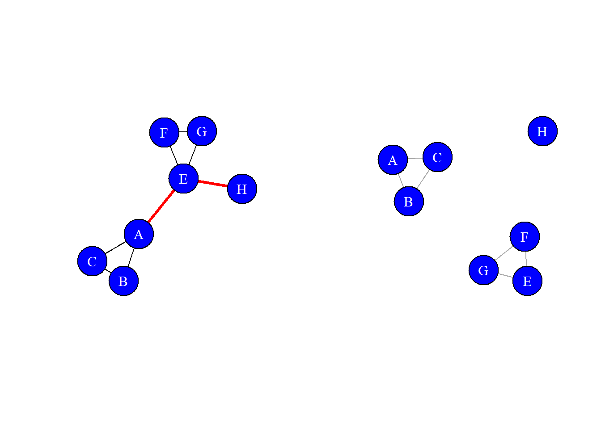

This document is devoted to the mathematical description of a network by means of the Adjacency Matrix, also known as Sociomatrix. This document needs the igraph package loaded, so take a look at the document Basics of igraph to see how to install it in order to follow the explanations.
We are going to use the same undirected graph we define in the Basics of igraph document, so let’s generate it (do not worry about the meaning of the functions used to define the graphs, they are explained in the same document)
Also, for later purposes, let’s define the digraph (directed graph)
Let’s fix the notation we will use along the course:
\[\begin{equation} V = \{ v_1, v_2\dots v_N\} \end{equation}\]
The order of the graph can be found as
## [1] 7\[\begin{equation} E = \{ e_1, e_2\dots e_L\} \end{equation}\]
The size of the graph can be found as
## [1] 10In this notation, note that an edge between vertices 1 and 2 cen be written as \(e(v_1, v_2)\), and a loop, or self-link, which is an edge beginning and ending on the same vertex as \(e(v_1, v_1)\).
The neighborhood can be found as
## [[1]]
## + 4/7 vertices, named, from 4559918:
## [1] 1 2 5 6
##
## [[2]]
## + 5/7 vertices, named, from 4559918:
## [1] 2 1 3 4 7
##
## [[3]]
## + 4/7 vertices, named, from 4559918:
## [1] 3 2 4 6
##
## [[4]]
## + 3/7 vertices, named, from 4559918:
## [1] 5 1 7
##
## [[5]]
## + 4/7 vertices, named, from 4559918:
## [1] 4 2 3 6
##
## [[6]]
## + 3/7 vertices, named, from 4559918:
## [1] 7 2 5
##
## [[7]]
## + 4/7 vertices, named, from 4559918:
## [1] 6 1 3 4later you will see that this output is rather much like the edge list or the adjacency list.
The degree is one of the most basic measures in any network analysis, not just from a descriptive perspective, but most of the network models are modelling precisely the degree distribution.
The size of the neighborhood of a vertex is known as the degree, then the degree is the number of edges connected to a vertex. We will denote the degree of the vertex \(v_i\) as \(k_i\), then we can easily see that, for un undirected graph, the size is given
\[\begin{equation} L = \frac{1}{2}\sum_{i=1}^N k_i \end{equation}\]
where the division by 2 comes from the fact that each link connects two different nodes of the network. In igraph we have the degree() function that finds the degree of each node in the network
## 1 2 3 5 4 7 6
## 3 4 3 2 3 2 3However, if the graph is a digraph, we talk about indegree, \(k_i^{in}\), as the number of incomming links to the node (followers, for example) and of outdegree, \(k_i^{out}\), as the number of outgoing links from the node (friends, for example). In this case, the size of the network is
\[\begin{equation} L = \sum_{i=1}^N k_i^{in} = \sum_{i=1}^N k_i^{out} \end{equation}\]
Now, to use degree() we must specify the mode, “in” or “out”, to be computed, for example
## 1 2 3 5 4 7 6
## 1 2 2 0 2 2 1Take into account that the output of these functions is a named vector, something really helpful since the output is not ordered by the node label, a number in this case, so be careful in reading this and the previous outputs.
An important quantity in a network is the average degree, which can be directly computed as the arithmetic mean of the degrees in a network. For an undirected graph we can find it as
\[\begin{equation} <k> = \frac{1}{N}\sum_{i=1}^N k_i = \frac{2L}{N} \end{equation}\]
while for a digraph we will find an average indegree and an average outdegree, which can be found as
\[\begin{equation} <k^{in}> = \frac{1}{N}\sum_{i=1}^N k_i^{in} = \frac{L}{N} \end{equation}\]
These quantitites will appear in different ways in the models of networks, as soon as they are can be used, since, remember, that an average is meaningful as long as the frequency/probability distribution it comes from is symmetric, in this case the degree distribution.
Note that there is no pre-built in R function to explicitely compute the average degree. It would be, however, rather absurd since we just need the usual mean() function
## [1] 2.857143The degree distribution is the probability distribution of the degrees in a network, i.e. it returns the probability that a given node has a particular degree. At this point we can only define it in terms of the classical relative frequency, then
\[\begin{equation} p_k = \frac{N_k}{N} \end{equation}\]
where \(N_k\) is the number of nodes with degree \(k\). With the usual constraint
\[\begin{equation} \sum_{k = 1}^\infty p_k = 1 \end{equation}\]
In our graph g, the degree (total frequency) distribution is
| degree | \(n\) |
|---|---|
| 0 | 0 |
| 1 | 0 |
| 2 | 2 |
| 3 | 4 |
| 4 | 1 |
| 5 | 0 |
then the degree distribution is just
| degree | \(p_k\) |
|---|---|
| 0 | 0 |
| 1 | 0 |
| 2 | 2/7 \(\approx\) 0.29 |
| 3 | 3/7 = \(\approx\) 0.57 |
| 4 | 1/7 = \(\approx\) 0.14 |
| 5 | 0 |
In R we can use the degree.distribution() function of igraph to determine the degree distribution, then we find
## [1] 0.0000000 0.0000000 0.2857143 0.5714286 0.1428571exactly as before.
Once we have the degree distribution, we can use it in the usual way to find expected values, then the average degree (expected degree, in this context) would be
\[\begin{equation} <k> = \sum_{k = 0}^\infty k\cdot p_k \end{equation}\]
this just means that if two nodes are connected, then we write a 1 in the corresponding matrix entrance.
The Adjacency Matrix, or Sociomatrix, \(A_ij\), is the mathematical representation of all the links in a network, then we can define it as
\[\begin{equation} A_{ij} = \left\{\begin{array}{ll} 1, & \text{if } e(v_i,v_j)\in E \\ 0, & \text{otherwise} \end{array} \right. \end{equation}\]
which basically means that it is a square matrix with dimensions given by the order of the network and such that has a 1 whenever two nodes are linked and a 0 otherwise.
In the case of an undirected graph it will always be an \(N\times N\) symmetric matrix such that the per-row or per-column sums return the degree of each node
\[\begin{equation} k_m = \sum_{i = 1}^N A_{im} = \sum_{j = 1}^N A_{mj} \end{equation}\]
For a digraph, it is not symmetric and then we must consider the rows and columns as the directions from and to other nodes. In this sense, it is a bit arbitrary to decide along which direction we write what, but let’s keep the following criterium:
then summing along rows and columns will give us the outdegree and the indegree respectively.
\[\begin{equation} k_m^{in} = \sum_{j=1}^N A_{mj},\qquad k_m^{out} = \sum_{i=1}^N A_{im} \end{equation}\]
Obtaining the adjacency matrix in igraph is straightforward, since we have the get.adjacency() function for it. The result dgCMatrix, the standard data type for sparse numeric matrices. Then we can just use it directly on the graph
## 7 x 7 sparse Matrix of class "dgCMatrix"
## 1 2 3 5 4 7 6
## 1 . 1 . 1 . . 1
## 2 1 . 1 . 1 1 .
## 3 . 1 . . 1 . 1
## 5 1 . . . . 1 .
## 4 . 1 1 . . . 1
## 7 . 1 . 1 . . .
## 6 1 . 1 . 1 . .and exactly the same for the digraph
## 7 x 7 sparse Matrix of class "dgCMatrix"
## 1 2 3 5 4 7 6
## 1 . 1 . . . . 1
## 2 . . . . 1 1 .
## 3 . 1 . . . . .
## 5 1 . . . . 1 .
## 4 . . 1 . . . .
## 7 . . . . . . .
## 6 . . 1 . 1 . .As a side note, it should be clear that you will only find non-zero elements in the diagonal of the matrix if and only if there are loops in the network.
What is the maximum number of possible links in a network? Since we have \(N\) nodes and a link is just a tie bewteen any two of them, we can immediately see that for undirected graphs
\[\begin{equation} L_{max}^{un} = \begin{pmatrix}N \\ 2\end{pmatrix} = \frac{N\cdot (N-1)}{2} \end{equation}\]
while for directed graphs we have
\[\begin{equation} L_{max}^{dir} = N\cdot (N-1) \end{equation}\]
since each node can go in two different directions.
A graph whose number of edges is precisely \(L_{max}\) is known as a complete graph, often called cliques.
Fig.: A Complete Graph with 16 nodes using a circular layout
In the language of adjacency matrix, and assuming no loops, a clique is described as a matrix with everywhere 1s (except the diagonal)
\[\begin{equation} A_{clique} = \begin{pmatrix} 0 & 1 & 1 & \dots & 1 \\ 1 & 0 & 1 & \dots & 1 \\ \vdots & & \ddots & & \vdots \\ 1 & 1 & 1 & \dots & 0 \end{pmatrix} \end{equation}\]
Of course, in real networks, cliques do not appear but in small groups, since real networks are sparse. Take a look at the following table with real data of three different networks
| Network | Nodes | Links | \(N\) | \(L_{max}\) | \(L\) |
|---|---|---|---|---|---|
| Citation Network | Papers | Citations | 449,673 | 101,102,678,628 | 4,689,479 |
| Actor Network | Actors | Co-acting | 702,388 | 246,674,100,078 | 29,397,908 |
| Protein Interactions | Proteins | Binding Interactions | 2,018 | 2,035,153 | 2,930 |
From the table it is clear that even though some networks do have a high number of links (almost 30M for the actor network), it is still very low compared to the maximum number they could actually have.
Let’s now consider the case of weighted graphs, where the links have an attribute named weight. In real cases this is a definite property of the type of link between nodes, for example, if the nodes are cities, these weights may represent the distance between them; if the nodes are email users, weights can be the total or the relative number of emails sent.
Let’s add a weight to the graphs we have already defined, see that since we do not want to overwrite the data, first we make a copy of the graph and then add the weights as an attribute to the new graph. These weights receive the name mails in an attempt to give them the meaning of the number of emails interchanged between the different actors, assumed to be the nodes, then
mails <- c(2, 3, 1, 1, 3, 3, 2, 1, 4, 5)
we_g <- g
E(we_g)$weight <- mails
we_dig <- di_g
E(we_dig)$weight <- mailsNow the adjacency matrix is not a (1,0)-matrix anymore, but the inputs are the weights, and then as a general definition we have
\[\begin{equation} A_{ij} = \left\{\begin{array}{ll} w_{ij}, & \text{if } e(v_i,v_j)\in E \\ 0, & \text{otherwise} \end{array} \right. \end{equation}\]
where \(w_{ij}\) is the weight of the edge connecting nodes \(i\) and \(j\).
To obtain the adjacency matrix in igraph, we have to add the argument weight as an attribute, then the call of the function becomes
## 7 x 7 sparse Matrix of class "dgCMatrix"
## 1 2 3 5 4 7 6
## 1 . 2 . 3 . . 1
## 2 2 . 1 . 3 3 .
## 3 . 1 . . 2 . 1
## 5 3 . . . . 4 .
## 4 . 3 2 . . . 5
## 7 . 3 . 4 . . .
## 6 1 . 1 . 5 . .from where we see the weights as the inputs of the matrix, as expected.
Sometimes we can give not the adjacency matrix but the edge list and the adjacency list. These are just side representations that may be as useful as, for example, the stem-and-leaf diagram in statistics.
To get the adjacency list we use
## $`1`
## + 3/7 vertices, named, from 4559918:
## [1] 2 5 6
##
## $`2`
## + 4/7 vertices, named, from 4559918:
## [1] 1 3 4 7
##
## $`3`
## + 3/7 vertices, named, from 4559918:
## [1] 2 4 6
##
## $`5`
## + 2/7 vertices, named, from 4559918:
## [1] 1 7
##
## $`4`
## + 3/7 vertices, named, from 4559918:
## [1] 2 3 6
##
## $`7`
## + 2/7 vertices, named, from 4559918:
## [1] 2 5
##
## $`6`
## + 3/7 vertices, named, from 4559918:
## [1] 1 3 4from where we obtain the vertices that are adjacent (connected) to each other vertex. Then, for example, we see that \(v_2<\) is connected with \(V_1\), \(v_3\), \(v_4\) and \(v_7\) (remember that the order is not given by the label in this case)
The edge list gives the same information but may be more useful when we have digraphs, since it returns the sign of the arrow in the connection. We obtain it as
## $`1`
## + 3/10 edges from 4559918 (vertex names):
## [1] 1--2 1--5 1--6
##
## $`2`
## + 4/10 edges from 4559918 (vertex names):
## [1] 1--2 2--3 2--4 2--7
##
## $`3`
## + 3/10 edges from 4559918 (vertex names):
## [1] 2--3 3--4 3--6
##
## $`5`
## + 2/10 edges from 4559918 (vertex names):
## [1] 1--5 5--7
##
## $`4`
## + 3/10 edges from 4559918 (vertex names):
## [1] 2--4 3--4 4--6
##
## $`7`
## + 2/10 edges from 4559918 (vertex names):
## [1] 2--7 5--7
##
## $`6`
## + 3/10 edges from 4559918 (vertex names):
## [1] 1--6 3--6 4--6The connectivity in a network speaks about how are the nodes tied: distance between nodes, shortest path, density of edges and the connected components of the graph, are different parts of the analysis we can perform from this perspective.
Let’s first define two ideas:
Let’s now see the different paths and quantities we can obtain from a graph
| Graph Path | Explanation |
|---|---|
|
|
In this graph we can identify the path from node \(E\) to node \(F\) as \[\begin{equation} e_1(E, A)\,e_2(A,B)\,e_3(B,D)\,e_4(D,F) \end{equation}\] This type of path is known as open walk (it would be closed if the starting and ending nodes were the same). In the same sense it is a trail since all the nodes traversed are different. |
|
 |
A closed path is one with the same starting and ending points, is a cycle, as the one \[\begin{equation} e_1(A, B)\,e_2(B,D)\,e_3(D,C)\,e_4(C,A) \end{equation}\] A graph has a Hamiltonian cycle if it has a cycle that visits each node of network only once. The cycle is Eulerian if all the edges are traversed but each is only once. A graph with no cycles is known as tree, if it is connected or as forest if it is disconnected. |
|
|
In our graph, in going from node \(E\) to node \(F\) we have 2 different shortest paths: \[\begin{equation} e_1(E, A)\,e_2(A,B)\,e_3(B,D)\,e_4(D,F) \end{equation}\] and \[\begin{equation} e_1(E, A)\,e_2(A,C)\,e_3(C,D)\,e_4(D,F) \end{equation}\] both with a length of \(4\). The distance of the longest shortest path is known as the diameter of the network |
|
 |
To find the Average Path Length, so the average distance from any node in the network to any other node. We find it as \[\begin{equation} <d> = \frac{1}{L_{max}}\sum_{i,j = 1}^N d_{i,j} \end{equation}\] where \(L_{max}\) depends on the graph being directed or undirected. |
The graph in the table can be defined as follows
Let’s use igraph to determine the previous quantities
We have a different functions to use here: all_simple_paths(), all_shortest_paths() or shortest_paths() are some of them, which return a list with all the corresponding types of paths.
In order to find the shortest paths from \(E\) to \(F\) we use
## $res
## $res[[1]]
## + 5/6 vertices, named, from 559ad65:
## [1] E A B D F
##
## $res[[2]]
## + 5/6 vertices, named, from 559ad65:
## [1] E A C D F
##
##
## $nrgeo
## [1] 1 1 1 1 2 2of course, we may not add the “to” argument, and then it finds all the shortests paths from the starting node. In any case, we see that there are two different shortest paths of length 4 between \(E\) and \(F\).
There is a general theorem that states that the inputs of the powers of the adjacency matrix give the number of paths of length the power between the nodes of a network.
In this case, for example, we know that we can only reach \(F\) from \(E\) using a path of length 4 (4 edges) and that there are two different paths, then if we compute the fourth power of the adjacency matrix, the value \(A^4_{EF}\) should be 2, let’s see it
## A B C E D F
## A 13 0 0 0 12 0
## B 0 10 10 5 0 5
## C 0 10 10 5 0 5
## E 0 5 5 3 0 2
## D 12 0 0 0 13 0
## F 0 5 5 2 0 3as expected, we find that \(A^4_{EF} = 2\).
Since we need to know all the shortest paths, we may apply the previous function to all the nodes and then find the longest among them. However, we can also use the diameter() function as
## [1] 4To find all the distances we use the distances() function, which returns a symmetric matrix with the steps from one node to any other
## A B C E D F
## A 0 1 1 1 2 3
## B 1 0 2 2 1 2
## C 1 2 0 2 1 2
## E 1 2 2 0 3 4
## D 2 1 1 3 0 1
## F 3 2 2 4 1 0If we read the data for node \(A\), the matrix says that it is one edge away from nodes \(B\), \(C\) and \(E\), two edges aways from node \(D\) and three away from node \(F\). That this is actually the case can be immediately seen from the graph in the table.
If we want the distance distribution we can use the distance_table() function as
## $res
## [1] 6 6 2 1
##
## $unconnected
## [1] 0This output means that there are 6 one-edge connections, 6 two-edges connections, 2 three-edges connections and 1 four-edges connection. Which is exactly what we have if we count the values in the distances matrix using only the upper or lower triangle values (for undirected graphs).
Using the formula seen above we can manually compute the average path as
dij = distance_table(paths_graph, directed = FALSE)
N = gorder(paths_graph)
nij = 1:length(dij$res)
av_d = 2 * sum(dij$res * nij)/(N*(N-1))
av_d## [1] 1.866667so and average length of 1.867. Fortunatelly there is a couple of functions we may use average.path.length() and mean_distance()
## [1] TRUE## [1] 1.866667which give us the same result as before.
This Average Path Length tell us what is the average number of edges bewteen any two different nodes of a network, essentially the equivalent to the famous six-degrees of separation!
We define the density of edges in a network as the ratio of the actual size divided by the maximum possible number of ties, then for undirected graphs we have
\[\begin{equation} D^{un} = \frac{L}{L_{max}} = \frac{2L}{N(N-1)} \end{equation}\]
while for directed graphs we have
\[\begin{equation} D^{dir} = \frac{L}{L_{max}} = \frac{L}{N(N-1)} \end{equation}\]
In igraph we use the function edge_density() directly applied to the graph, there is no need to specify if it is directed or undirected. However, note that it has, as default, the option of removing the loops
## [1] 0.4761905A graph is connected if there is a path between every pair of nodes in it. Of course, it is disconnected otherwise.
To find if a graph is connected we can use simple inspection in the case of few number of nodes or directely pass it to the is_connected() function. In the case of the graph in the table
## [1] TRUEThe components of a graph are all the connected subgraphs we may find in it. We can identify them with component_distribution(). If we use the graph from the table we find
## [1] 0 0 0 0 0 0 1which means that there is one single component made out of 6 six nodes. We can find more information from the components() function:
## $membership
## A B C E D F
## 1 1 1 1 1 1
##
## $csize
## [1] 6
##
## $no
## [1] 1where we use the argument weak or strong as defined right below. The information given is that all the nodes belong to the same cluster, which is of size 6.
In digraphs due to the directionalities of the network it may be the case that some nodes cannot be reached from others or that the reachability is not bidirectional, for example, then we denote as
there are other types of connected components as unilateral or recursively, but we leave them out of our study.
Suppose we generate a random digraph with 10 nodes

if we take a look at the graph, the node number 5, cannot be reached by any other node, since it only has outgoing links, therefore, we have two strongly connected components and one weakly connected component, let’s see this from the output of the components() function. If we use the strong argument
## $membership
## [1] 2 2 2 2 1 2 2 2 2 2
##
## $csize
## [1] 1 9
##
## $no
## [1] 2we obtain two different cluster, one of size 1 and the other of size 9, the only node that belongs to the first component is the node number 5, as expected.
With the weak option
## $membership
## [1] 1 1 1 1 1 1 1 1 1 1
##
## $csize
## [1] 10
##
## $no
## [1] 1we obtain one single component and so, every node in the network can be reached if we drop the directionality of the edges.
The last piece of information we are going to use is the identification of nodes and links that make a network connected. In this sense we have:

In igraph we can use the function articulation.points() to determine which are the cutpoints of our network (named cut)
## + 2/7 vertices, named, from 5684965:
## [1] E AIn the graph before we have only marked the node \(A\), however, if we remove the node \(E\), we also obtain a network with two components, since the node \(G\) will be isolated.

Neither in igraph nor in statnet there is a built-in function to determine the bridges, then you may want to define your own one by checking recursively for all the nodes that if you remove one, the nunmber of components increases.